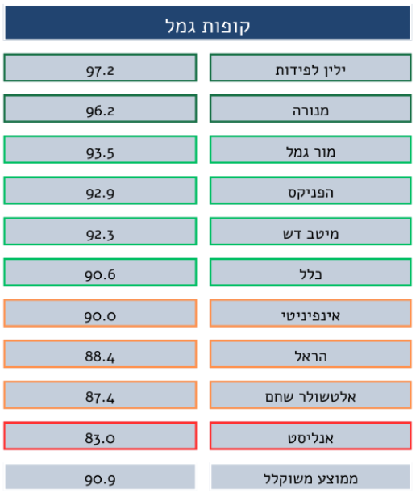
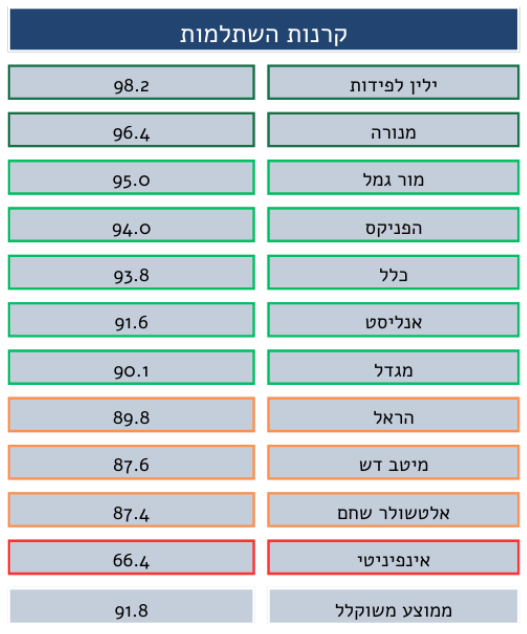

מדד הפנדינג בחיסכון הפנסיוני
מדד הפנדינג (Pending) הוא מדד המשקף את קצב קליטת כספי החיסכון הפנסיוני של הציבור (קרנות פנסיה, ביטוחי מנהלים, קופות גמל וקרנות השתלמות) על ידי הגופים המוסדיים מרגע הפקדתם על ידי המעסיק או העצמאי ועד לרגע שיוך הכספים לחשבון העובד
מדד זה בוחן את התנהלותם השוטפת של הגופים המוסדיים בהליכי קליטת הכספים, ומעניק ניקוד לכל גוף מוסדי בהתאם לפרמטרים הכלולים במדד. המדד משקף לציבור היבט חשוב בניהול כספי החיסכון הפנסיוני על ידי הגופים המוסדיים בפן התפעולי ובכך מעודד את הגופים המוסדיים לשפר את התנהלותם לרווחת העמיתים. המדד מחושב על בסיס נתונים המדווחים לרשות שוק ההון, ביטוח וחיסכון מידי חודש ומביא בחשבון את כל הכספים שהופקדו לגוף המוסדי וטרם שויכו. המדד מורכב מחמישה רכיבים, כאשר ארבעה רכיבים מבטאים כספים שטרם שויכו והופקדו על פני תקופות שונות, ורכיב נוסף שמבטא החזר כספים מהגוף המוסדי למעסיקים. ככל שלגוף המוסדי קיימים כספים רבים שטרם שויכו וכן כספים רבים שהוחזרו למעסיק, ציון החברה במדד יהיה נמוך יותר. המדד מדרג כל חברה בנפרד בהתאם לסוג המוצר, ובוחן את החברה ביחס להיקף הכספים שהופקדו בה באותה תקופה.
להלן ציוני מדד הפנדינג לשנת 2023 כפי שפורסמו על ידי רשות שוק ההון:
 